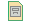

A page archive can be accessed by clicking on the archive icon (or the "Archived Versions" link in the toolbar, if icons are turned off):

If there is more than one archived version of the page, you can move back and forth through the archive using the back and forward icons (or "Older" and "Newer" links, if icons are off):
You can also view the current version of the page at any time by clicking on the view most recent icon (or "Most Recent" link):
If you are looking at the "most-recent-but-one" version of the page, the "Newer" link/icon will not be shown; if yu're at the oldest version, the "Older" link/icon won't be shown. In any case, you will see an "x of y" entry in the toolbar showing you where you are in the archived versions.